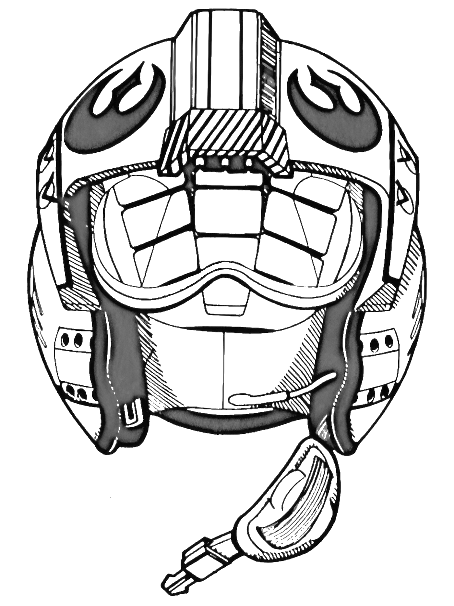

Empire


| Category | Detail | Helmet |
|---|---|---|
| Pilot |
Rebel pilots, also known as Alliance pilots, Rebel fighter pilots or Alliance Starfighter Pilots, were pilots who served the Alliance to Restore the Republic under its starfighter corps. They had prior fought for the early rebel movement and had countless battles against the Galactic Empire forces during the Galactic Civil War. They piloted starfighters such as A-wings, B-wings, X-wings, and Y-wings, as well as low altitude vehicles such as T-47 airspeeders. |
 |
| Category | Detail | Helmet |